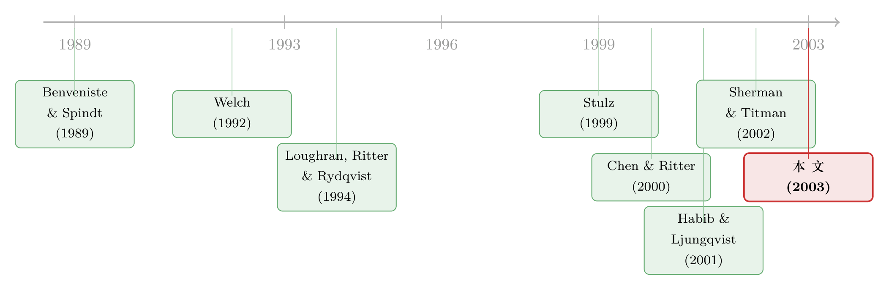

「七个点」也跨了国：新股的好与贵，藏在谁来卖、卖给谁里
本文读的是 Ljungqvist, Jenkinson & Wilhelm (2003, Review of Financial Studies)：用 1992–1999 年间 65 个国家 2,143 宗 IPO 的样本，他们发现「簿记建档」这套美国承销技术贵了一倍，却并非天生能压低抑价——只有当美国投行来牵头、且面向美国投资者营销时，抑价才真正显著下降。换句话说，IPO 卖得好不好，关键不在用了哪种「定价机制」，而在谁来卖、卖给谁。对七成发行人来说，多付的那笔承销费，是一笔划算的买卖。
1 一个反常识的开场：贵的方法，凭什么赢？
先讲一个让人犯嘀咕的事实。
整个 1990 年代，一股「美国化」的浪潮席卷了全球新股发行市场。传统上，一家公司上市，是请本国的银行、把股票卖给本国的投资者；定价用的是固定价格 (fixed-price) 方法——先把价格定死，再公开让人认购。可到了这十年里，越来越多的非美国发行人，开始改用美国投行长期使用的簿记建档 (bookbuilding)：在最终定价之前，先去一家家机构投资者那里「探口风」，把他们的需求意向收集进一本「订单簿」，再据此敲定发行价和分配。到 1999 年 7 月，本文样本里大约 80% 的非美 IPO 已经改用了簿记建档。
问题来了：簿记建档贵。本文给出的数字是，它的直接成本（承销费）大约是固定价格方法的两倍。一个理性的发行人，凭什么放着便宜的方法不用，偏要去买这套贵的服务？
更扎眼的是，如果你只看最朴素的平均数，会发现一件几乎让整个故事「崩盘」的事：簿记建档和固定价格的平均抑价 (underpricing)，竟然惊人地接近，都在 20% 上下；在欧洲，簿记建档的 IPO 抑价甚至比固定价格的还高。
于是，一个尖锐的疑问浮出水面：既然又贵、抑价又没更低，这套被全世界争相模仿的美国技术，到底好在哪儿？它的扩散，究竟是一次理性的市场整合，还是一场集体的误会？
这篇论文，就是来回答这个疑问的。而它的答案，比「机制之争」要深一层。
2 把成本拆开：贵，到底贵在哪一环？
要回答「值不值」，先得把「贵」这件事拆清楚。
这正是本文识别上的第一个讲究之处：直接把「美国投行收费高」和「美国投行服务好」划等号，是不行的，因为这里头缠着一堆混淆因素。美国投行很少做固定价格发行；它们牵头的交易往往规模更大（有规模经济）、往往要去美国上市、往往要面向美国投资者营销。这些都会影响费率。所以作者做的，是把承销价差 (gross spread) 放进一个多元回归里，层层剥离这些因素，看最后还剩下多少是「美国投行」这个标签本身带来的溢价。
剥离的结果很有意思：
- 美国投行牵头簿记建档时，比「本土」银行平均贵 73 个基点 (bp)；
- 去美国上市这件事本身，要额外掏 130 bp 以上的成本——而且样本里，一旦要在美国上市，美国投行几乎总是坐在承销团的高级位置上；
- 在美国营销，平均要多花约 36 bp（但美国投行并不为「在美国营销」额外加价）；
- 把上面这些——连同规模经济——全部控制住之后，美国投行依然要收溢价，平均 41 bp；
- 哪怕是那些既不在美国上市、也不在美国营销的 IPO，美国投行照样收溢价，平均 48 bp。
这组数字本身就排除了一种偷懒的解释：美国投行的贵，不是因为它顺手把「美国上市」「美国营销」这些附加服务的账一起算给了你。把这些都摘干净，溢价仍然顽固地存在。
那这 41 到 48 个基点，买的到底是什么？作者提出的假说很直接：更高的直接成本，对应的是更高质量的服务。而衡量服务质量的一个核心维度，就是——IPO 定价定得准不准，也就是抑价压得低不低。
到这里，故事从「成本」转向了「质量」。但要把这个弯转得让人信服，必须先迈过一道坎。
3 真正关键的一步：把「选择」内生化
这道坎，叫内生性 (endogeneity)。
回想一下第 1 节那个「平均抑价都是 20%」的尴尬事实。它之所以不能说明问题，是因为发行人并不是随机地被分配到「簿记建档」或「固定价格」里去的——他们是根据自身特征主动选择的。
理论早就提示了这种选择不是随机的。Benveniste & Spindt (1989) 把簿记建档刻画成一种「信息榨取」机制：投行用「打折的股票 + 优先配售」作诱饵，诱导知情投资者把私人信息吐出来。顺着这个逻辑，信息不对称越严重的行业——比如信息技术、生物科技——越能从这套信息生产中获益。Sherman & Titman (2002) 进一步把「该招募多大的投资者池」这种设计细节，和发行人对信息生产的「需求」挂上了钩。而 Habib & Ljungqvist (2001) 给出了另一个内生性的来源：发行规模越大，在边际上少一分抑价对原股东就越值钱——所以大公司更有动机去买那套能压低抑价的贵服务。
把这些放在一起，结论就很清楚了：选什么承销方式，本身就是被那些会影响抑价的因素决定的。如果不处理这层选择，直接比较两组的抑价，比的其实是「苹果和橘子」。
所以作者的做法，是估计一组两阶段模型 (two-stage models)：第一阶段为发行人的选择（用不用簿记建档、要不要请美国投行、要不要面向美国投资者）建模，把这些选择当作内生变量「工具化」；第二阶段，在控制住选择之后，再去看每一种选择对抑价的真实因果效应。这一脉的计量工具，正是 Heckman (1979) 的样本选择校正、Lee (1978) 与 Maddala (1983) 的转换回归 (switching regression) 框架。
这一步是全文的「枢纽」。没有它，第 1 节那个「平均抑价一样」的反常识结论会一直挡在路上；有了它，作者才能把「机制」与「选择」分开，让真正起作用的那个变量浮出水面。
迈过这道坎之后，反转就来了。
4 反转：起作用的不是「机制」，是「人」
把内生选择处理干净、再去估抑价方程，作者得到了本文最核心、也最反直觉的发现：
簿记建档本身，并不会降低抑价。
真正能显著压低抑价的，是簿记建档 + 美国投行 + 美国投资者这个组合。当一桩 IPO 由美国投行操刀、并且把美国机构投资者拉进订单簿时，它的抑价才会相对固定价格、或相对「本土」银行做的簿记建档，显著下降。
这和 Benveniste & Spindt 的理论严丝合缝。簿记建档的成败，依赖于投行与投资者之间反复的、长期的博弈，依赖于能不能把真正知情的投资者请进场。美国投行做簿记建档的历史最长，更可能掌握那批关键的机构投资者，也更有本事在一次次交易中动态地奖励那些愿意吐露信息的投资者（甚至可以把非美 IPO 和火热的美国本土 IPO「捆绑」起来，给投资者更大的诱因——这是非美银行学不来的）。所以，让抑价下降的，从来不是「簿记建档」这个空壳子，而是装在壳子里的那套关系网与声誉资本。
换句话说：到底由谁来卖、卖给谁，比定价机制本身那些微妙的差别，重要得多。
这个判断也呼应了一桩关于「机制」的老争论。Derrien & Womack (2000) 认为法国发行人用拍卖 (Offre à Prix Minimal) 反而更好（关于这条线，可参见《新股「打折」的秘密，藏在定价和上市之间那几天里》）；而 Biais & Faugeron-Crouzet (2001) 则指出法国拍卖和簿记建档其实高度神似。本文的立场更接近后者：两种机制都给了承销商大量的相机裁量空间，真正决定结果的不是机制的细微差异，而是营销的对象和操盘的人。
5 把账算到底：那笔贵服务，到底值不值？
光说「美国投行能压抑价」还不够，得把它和「美国投行更贵」放到同一杆秤上称一称——多省下的抑价，够不够付那多出来的承销费？
这正是转换回归 (switching regression) 模型的用武之地：它能为每一家发行人做一次反事实 (counterfactual) 推演——如果这家公司当初选了另一条路，它的抑价会变成多少？
算下来的结果相当有说服力：
- 假如所有发行人都换一条「省钱」的路（不请美国投行、也不向美国投资者营销），会有 73% 的发行人变得更糟——省下的承销费，抵不过因此多出来的抑价损失。其中，转向「省钱」策略的中位数公司，净募资额会缩水
US$11.7百万。 - 反过来，假如换一条「更贵」的路（在原本不由美国投行操盘的簿记建档里，把美国投行请进来），会有 62% 的发行人变得更好。
这就把第 1 节那个悬念彻底解开了：那笔看似冤枉的、贵了一倍的承销费，对大多数发行人来说，是一笔划算的买卖。贵，是因为好；好，体现在它把「钱留在桌上」的那部分损失给省了回来，而且省下的比多花的还多。这是一个清清楚楚的质量/价格权衡 (quality/price trade-off)。
6 一个意外的「彩蛋」：7% 也跨了国
故事到这里本可以收尾了，但作者顺手戳破了另一个争论。
读过美国 IPO 文献的人都知道那个著名的「七个点之谜」：美国 IPO 的承销价差出奇地扎堆在 7% 附近。Chen & Ritter (2000) 据此认为，美国投行的收费超过了竞争性水平，并且引用「非美 IPO 的价差更低」来佐证（Hansen (2001) 持相反看法）。
本文的回应分两层，都很锋利。
第一层：非美 IPO 的价差历史上确实更低，但这主要是因为非美市场长期、广泛地使用了「低成本」的固定价格方法——是机制的差异，不是「美国人收费太狠」的证据。一旦把口径对齐，这个比较就站不住脚了。
第二层、也是更漂亮的一击：本文发现，那些募资规模在 US$20 百万到 US$80 百万之间的非美发行人，只要美国投行和美国投资者一旦介入，他们同样要付大约 7% 的价差。「七个点」并不是美国市场独有的怪胎——它跟着美国投行和美国投资者一起，跨过了国境。这恰恰支持了「7% 买的是质量、而非垄断租金」的解读（关于这桩公案的另一面，可参见《7% 这把「固定的尺子」，竟能改写新股的价格》）。
7 数据：这套结论是从哪儿长出来的
把识别讲清楚之后，有必要交代一下这套结论赖以成立的「土壤」。
本文用的是一个当时全新的数据集 Equityware（Euromoney 旗下子公司编纂的国际 IPO 数据库）。从 1992 年 1 月到 1999 年 7 月，原始库里有 2,436 宗非美发行，作者剔除了 87 宗并非真正首发的、181 个投资信托、3 个优先股发行、以及 22 宗缺乏后市价格的，最终样本是 65 个国家的 2,143 宗 IPO。其中三分之二来自欧洲、近四分之一来自亚太。
几个值得记住的口径：
- 观测单位是单宗 IPO，数据涵盖承销费、初始收益、承销团构成、以及股票在哪里发售和上市。
- 抑价用的是上市后第一周（而非第一天）的收益——一来 Equityware 的七日价格覆盖更全，二来法国、日本等地有「熔断」式的每日涨跌幅限制，第一天的价格还没收敛到均衡。所有 ±30% 以上的初始收益都做了人工复核。
- 定价方法（拍卖/固定价格/簿记建档）数据库本身并不标注，是作者一宗一宗手工分类的。最终
1,318宗被判定为簿记建档（其中 703 宗是「序贯混合 (sequential hybrid)」，即先簿记、后散户认购），773宗是固定价格，拍卖只有 52 宗（34 宗在法国）。 - 「美国投行」的界定也很考究：指高盛、摩根士丹利这类美国投行及其海外分支，剔除非美银行的华尔街分号；瑞信第一波士顿因其悠久的华尔街存在，被归为美国投行。「面向美国投资者营销」则定义为：经 SEC 注册、援引 Rule 144A、设有「U.S. tranche」、或在美国交易所上市。
样本有它的脾气。Equityware 早年（1992–1993）只覆盖跨境 IPO，所以早期样本偏大、也不完整；印度、以色列、台湾、韩国、中国 A 股等几个有大型本土市场的地区没被纳入。作者报告说，剔除 1992–1993 后结论定性不变，因此保留了全样本——但读者心里要清楚，这是一个偏向较大、较国际化发行的样本。
8 文献脉络：从「机制之争」到「人与网络之争」
把这篇论文放回它所在的那条研究长河里，会看得更清楚。
最早，人们关心的是抑价这个现象本身，以及各国之间的差异。Loughran, Ritter & Rydqvist (1994) 做了一次「鸟瞰」，把大量各国研究里的平均抑价拼到一张图上——但这种汇总既没控制公司、行业、时间效应，也没处理承销团结构与营销方式的内生选择。
与此同时，一条理论线在生长。Benveniste & Spindt (1989) 奠基性地把簿记建档解释为「用优先配售换信息」的机制；Sherman (1999, 2000) 与 Sherman & Titman (2002) 把这套逻辑推向「长期关系」和「最优投资者池」；Habib & Ljungqvist (2001) 则点出抑价损失对发行人的边际价值随规模变化，为内生性埋下伏笔。

另一条争论线则围着「7% 之谜」打转：Chen & Ritter (2000) 说价差超竞争，Hansen (2001) 说不然。还有一条机制之争：Derrien & Womack (2000) 替法国拍卖说话，Biais & Faugeron-Crouzet (2001) 则强调拍卖与簿记建档的相似。更宏观地看，这一切又嵌在 Stulz (1999) 关于二级市场全球化如何降低资本成本的图景里——而本文要补上的，正是一级市场整合这块长期被忽视的拼图。
本文站在这些线的交汇处，第一次用一个大样本、受控的、处理了内生性的框架，把上面这些问题一并回答了：它告诉你机制之争其实问错了问题，告诉你 7% 跟着美国投行跨了国，也告诉你一级市场的整合——尤其是美国机构投资者的角色——在多大程度上真实地为发行人创造了价值。
9 评论与延伸（Q&A + 研究方向）
(a) 几个可能的疑问
Q：既然处理了内生性，那「美国投行 + 美国投资者」压低抑价，能算是因果效应吗？还是只是更好的公司自己选了美国投行？
这正是全文最吃劲、也最容易被质疑的地方。作者用两阶段/转换回归来「工具化」选择，但识别的可信度，最终取决于排他性约束 (exclusion restriction) ——得有变量只影响「选不选美国投行」却不直接影响抑价。论文用的是发行人/行业/时间特征类的工具，这类工具在 IPO 文献里向来不算无懈可击。所以稳妥的读法是：这是一个控制了可观测选择后的、方向高度一致的关联证据，比朴素的均值比较强得多，但还不是一台干净的自然实验。
Q：抑价用「第一周」而不是「第一天」，会不会把结论带偏？
不太会，反而更稳。用七日收益是为了绕开法国、日本的每日涨跌幅限制（价格第一天还没收敛），而且 Equityware 的七日价格覆盖更全。代价是七日窗口会混入一点点上市后的市场波动，但对一个跨 65 国、机制各异的样本来说，这个取舍是合理的。
Q：簿记建档「自己」不降抑价，会不会只是因为很多是「序贯混合」、被散户那条腿拖累了？
这是个好直觉。理论上（Chowdhry & Sherman 1996；Welch 1992），序贯混合里散户能根据订单簿的热度「追单」，可能引发信息瀑布 (cascade) 从而抬高抑价。但本文的核心结论不是「簿记建档一定不好」，而是「簿记建档得配上对的人才好」——
703宗序贯混合的存在，恰恰说明光有机制的外壳不够。这与「人比机制更重要」的主线是一致的。
Q：73% 的发行人「换便宜路会更糟」，这个反事实可信吗？
它完全依赖转换回归模型设定的正确性——反事实抑价是模型「算」出来的，不是观测到的。如果选择方程或抑价方程设定有偏，这个 73% 和
US$11.7百万的中位数损失就会跟着偏。把它当作「在模型假设下、方向稳健的量级」来读，而不是一个可以直接刻进政策的精确数字，会更稳妥。
Q：这对「7% 之谜」到底是支持还是反驳 Chen & Ritter？
是有力的反驳，但不是终结。本文指出非美价差低主要源于固定价格方法的广泛使用，且 7% 会随美国投行/投资者跨国，这削弱了「用非美低价差证明美国超额收费」的论证。但它没有、也无法直接证伪「美国市场存在某种隐性协调」——它只是把天平更明确地推向「7% 买的是质量」这一侧。
Q：这篇讲一级市场整合，和大家熟悉的二级市场全球化是一回事吗？
不是，而且这正是本文的卖点。二级市场整合（Bekaert & Harvey 2000；Henry 2000；Stulz 1999）讲的是已上市股票的跨境交易、流动性与资本成本。本文讲的是发行环节——谁来承销、卖给哪国投资者——的整合。作者强调，相对二级市场，一级市场直到很晚才打破分割，而它带来的收益在数据里相当可观。
(b) 几个可能的研究问题与提案
1. 把这套逻辑搬到公司债的跨境发行上。
【经济故事】债券一级市场同样有「谁来承销、卖给谁」的问题：美国投行 + 美国机构投资者，是否同样能压低新债的「抑价」（即上市首日的价格跳升）和承销费？信用市场的信息不对称结构与股权不同，关系资本的作用可能更强也可能更弱。 【可行性】中。需要跨国公司债发行数据（Dealogic/Refinitiv 的发行明细 + TRACE 类的成交数据做首日定价），识别上可借鉴本文的转换回归，但债券首日定价的清洁度和样本匹配是难点。
2. 用监管冲击做一次更干净的识别。
【经济故事】本文的内生性是靠模型「校正」的；如果能找到一个外生改变「能否请美国投行/面向美国投资者」的事件（比如某国资本市场开放、Rule 144A 适用范围调整、或某类跨境发行禁令的取消），就能把「人与网络」的因果效应钉得更死。 【可行性】中。关键在于找到时点清晰、且只影响「准入」不直接影响抑价的政策变动，做双重差分 (DiD)。候选事件不少，但每一个都要论证平行趋势与排他性。
3. 外资机构投资者「进场」如何改变发行环节的定价。
【经济故事】本文把「美国投资者」当作一个整体的「需求方质量」。但不同外资机构的信息、持有期限、关系深浅差异很大。谁进了订单簿、占了多大份额，是否系统性地预测了更低抑价？这能把「卖给谁」拆得更细。 【可行性】中偏低。瓶颈是订单簿层面的投资者身份数据极难获得（多为投行私有）；可退而求其次，用上市后的机构持股（13F 类数据的国际对应）做近似，但那已是后市、不是发行时点。
4. 一级市场整合与「真实经济发展」的链接。
【经济故事】作者在引言里提到，一级市场整合（尤其美国机构投资者的参与）可能缓解 Pagano (1993) 笔下的协调失败，从而推动实体经济。能否在国家或行业层面，把「本国发行人接入美国投资者」的程度，和后续的上市数量、投资、就业增长联系起来？ 【可行性】低到中。这是一个雄心更大的宏观-金融问题，数据可拼（发行数据 + 国别宏观/产业面板），但因果识别极具挑战，容易陷入反向因果。适合作为一篇独立的、以工具变量或事件为核心的长线研究。
落到我自己的判断上。
这篇论文的贡献在于一次漂亮的「问题重置」：它没有去掺和「拍卖 vs 簿记建档」的机制口水战，而是把镜头从「机制」挪到了「人与网络」——谁来操盘、卖给哪国投资者——并用一个跨 65 国、处理了内生选择的大样本，把这个新角度做实了。「簿记建档本身不降抑价、得配上美国投行和美国投资者才行」，以及「7% 跟着美国人跨了国」，这两个结论既反直觉又有政策含义，至今读来仍不过时。
我对识别的担忧也很直白：核心结果是转换回归「算」出来的反事实，它的可信度系于选择方程的设定和工具的排他性，而这恰恰是 IPO 文献里最难取信于人的环节。73%、US$11.7 百万这些数字，方向我信，精确量级我会打个折扣。此外，样本天然偏向较大、较国际化的发行，把结论外推到中小型、纯本土发行时要小心。
后续我最想看到的，是把这套「人与网络比机制更重要」的主张，搬到一个有外生政策冲击的场景里再检验一遍——尤其是搬到公司债和外资持有人那一侧。如果在信用市场里，「谁来卖、卖给谁」同样压倒「怎么定价」，那本文的洞见就不只是关于 IPO 的，而是关于整个跨境融资如何被一小撮投行与机构投资者的关系资本所定价的。
参考文献
- Benveniste, L. M., and P. A. Spindt (1989). How Investment Bankers Determine the Offer Price and Allocation of New Issues. Journal of Financial Economics 24, 343–361.
- Biais, B., and A. M. Faugeron-Crouzet (2001). IPO Auctions: English, Dutch, … French and Internet. Journal of Financial Intermediation (forthcoming).
- Chen, H.-C., and J. R. Ritter (2000). The Seven Percent Solution. Journal of Finance 55, 1105–1131.
- Chowdhry, B., and A. E. Sherman (1996). International Differences in Oversubscription and Underpricing of IPOs. Journal of Corporate Finance 2, 359–381.
- Derrien, F., and K. L. Womack (2000). Auctions vs. Bookbuilding and the Control of Underpricing in Hot IPO Markets. Review of Financial Studies (forthcoming).
- Habib, M. A., and A. P. Ljungqvist (2001). Underpricing and Entrepreneurial Wealth Losses: Theory and Evidence. Review of Financial Studies 14, 433–458.
- Hansen, R. S. (2001). Do Investment Banks Compete in IPOs? The Advent of the "7% Plus Contract". Journal of Financial Economics 59, 313–346.
- Heckman, J. (1979). Sample Selection Bias as a Specification Error. Econometrica 47, 153–161.
- Loughran, T., J. R. Ritter, and K. Rydqvist (1994). Initial Public Offerings: International Insights. Pacific-Basin Finance Journal 2, 165–199.
- Pagano, M. (1993). The Flotation of Companies on the Stock Market: A Coordination Failure Model. European Economic Review 37, 1101–1125.
- Sherman, A. E. (2000). IPOs and Long-Term Relationships: An Advantage of Book Building. Review of Financial Studies 13, 697–714.
- Sherman, A. E., and S. Titman (2002). Building the IPO Order Book: Underpricing and Participation Limits With Costly Information. Journal of Financial Economics 65, 3–29.
- Stulz, R. M. (1999). Globalization, Corporate Finance and the Cost of Capital. Journal of Applied Corporate Finance 12, 8–25.
- Welch, I. (1992). Sequential Sales, Learning and Cascades. Journal of Finance 47, 695–732.